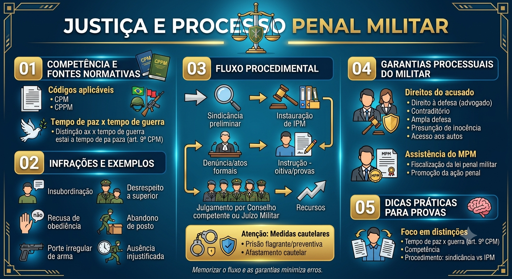

Material de estudo: Justiça e Processo Penal Militar
Material complementar · Ver fonte no GitHub
Competência e Fontes Normativas
Códigos aplicáveis
O policial militar, nas hipóteses legais, está sujeito ao Código Penal Militar (CPM) e ao Código de Processo Penal Militar (CPPM). A Justiça Militar estadual (Tribunal de Justiça Militar ou órgão equivalente) é competente para crimes militares propriamente ditos, além de competência subsidiária para crimes comuns praticados por militares em serviço, conforme legislação.
Tempo de paz x tempo de guerra (art. 9º do CPM)
O art. 9º do CPM distingue crime militar em tempo de paz e em tempo de guerra: a tipificação pode variar conforme o momento (ex.: condutas que só são crime em tempo de guerra). É essencial identificar o contexto fático para aplicar corretamente o tipo penal militar.
Infrações e Exemplos
Infrações militares comuns
- Insubordinação
- Desrespeito a superior
- Recusa de obediência
- Abandono de posto
- Porte irregular de arma funcional em serviço irregular
- Ausência injustificada (ausente/deserção)
Fluxo Procedimental (resumo)
Etapas principais
Sindicância preliminar (quando aplicável) → Instauração de Inquérito Policial Militar (IPM) → Denúncia/atos formais → Instrução (oitiva de testemunhas, produção de provas) → Julgamento por Conselho competente ou Juízo Militar → Recursos.
Medidas cautelares
Medidas como prisão em flagrante, prisão preventiva e afastamento cautelar podem ser aplicadas em processos penais militares, observando os requisitos constitucionais e processuais (fundamentação, proporcionalidade e prazo).
Garantias Processuais do Militar
Direitos do acusado
Amplos direitos processuais se aplicam: direito à defesa (advogado), contraditório, ampla defesa, presunção de inocência, acesso aos autos, prazo para apresentação de resposta à acusação e possibilidade de recursos regimentais.
Assistência do Ministério Público Militar
O Ministério Público Militar (MPM) atua na fiscalização da lei penal militar, promoção da ação penal e acompanhamento do processo, com garantias de independência funcional.
Dicas Práticas para Provas
Foco em distinções
Questões costumam explorar a diferença entre crime militar em tempo de paz e em tempo de guerra (art. 9º CPM), competência (Justiça Militar vs Justiça comum) e o procedimento: quando cabe sindicância e quando instaura-se IPM. Memorizar o fluxo e as garantias minimiza erros.
Mapa-mental
